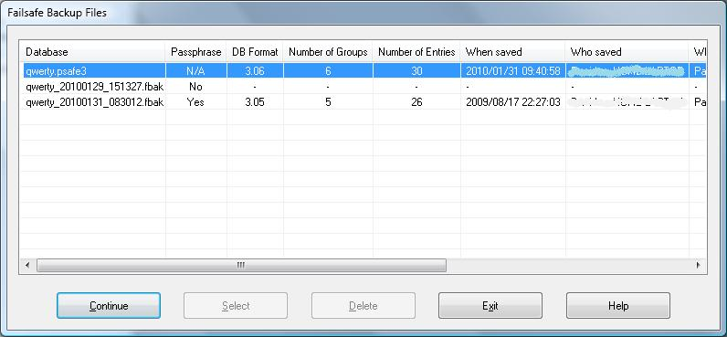

During the normal exit from PasswordSafe, if the open database has any changes that have not yet been saved, the user is prompted whether to save these or just exit. However, if the user just logs off their Windows session or shutdowns or restarts their PC, depending on the version of Windows they are running, it may not be possible to ask the user their wishes - see below.
In this case, if possible, PasswordSafe will make an "Failsafe Backup" (file extension 'fbak' rather than the normal "intermediate backup" extension 'ibak'). This will be created in the same directory as the currently open database rather than any alternative backup directory that may have been specified in the user's preferences. The current database and its last intermediate backup will not be touched.
When the original database is opened again, PasswordSafe will check for the existence of any Failsafe Backup file and, if any found, will display a dialog similar to that below.
The first row is the currently open database followed by the information from the database (as shown in the File->Properties dialog). This is followed by the Failsafe Backup files. If they can be opened with the same passphrase as the currently open database, then there properties are also displayed. If they have a different passphrase or are not a valid database, then a 'No' is displayed in the Passphrase column and no properties can be displayed.
There are 5 buttons on the dialog and they are:
Suggestions:
The end of session (logoff, shutdown and restart) processing changed from Vista. Prior to that (Windows 2000 and Windows XP), the application could display a dialog to ask the user what they wished to do, e.g. save changes or discard them. If the user did not respond within 5 seconds, Windows displayed its own dialog and the user could close any 'stuck' applicatons by clicking the 'End Now' button. The user could still respond to the application's own dialog.
PasswordSafe will display its own dialog if there are any unsaved changes to the currently open database. If there are none (e.g., the user hasn't made any, the user has but has already saved the database or the database is open in read-only mode), PasswordSafe will close when Windows instructs it to do so.
Vista and Windows 7 provide a different mechanism. The application notifies Windows that it wants to block the end of session and gives the reason. At the end of session, if any application has notified Windows of this requirement, Windows will display a full screen dialog displaying all the reasons given to it. The user can then decide to cancel the end of session or force it.
PasswordSafe will inform Windows that it wants to block the end of session whenever the user makes a change to the currently open database. It will remove this reason as soon as the user saves the database or undoes all the changes. PasswordSafe will close when Windows instructs it to do so.
Under Windows XP and earlier, PasswordSafe will save the database if the user responds to its own dialog with 'Yes'. It will attempt to take the Failsafe Backup if the user was not able to respond to the dialog in the 5 second window provided by Windows.
Under Vista and later editions of Windows, PasswordSafe will attempt to take the Failsafe Backup if the user forces a change of session via Windows' own full screen dialog despite PasswordSafe informing the user that there are unsaved changes.
Note: In some circumstances, Windows will inform all applications that it must close immediately, for example when Windows' updates are being applied. In these cases, applications may not be able to ask the user their wishes and PasswordSafe may not be able even perform an Failsafe backup.
NOTE: There is nothing that ANY application can do to save information if the PC is just switched off, looses power or the processor,the hard disk or any other component fails!!!
As with all data important to you, you should backup your data to another media regularly. This could be to USB pen drives, external hard disks, network drives, CDs or DVDs etc.
Again, like any other data that is important to you (for example: passports, title to your house, other legal documents etc.), these backups should be stored somewhere safe!